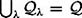

|
| |||||||||||||
|
|
||
In contrast to looking at equidistance, the silhouette approaches use extrema of a function defined on a codimension one hyperplane called a slice[6], which we denote by . The λ parameterizes the slice; varying the parameter λ has the effect of sweeping the slice through the configuration space. As the slice is swept through the configuration space, for each value of λ, the critical points of a function restricted to the slice are determined. The trace of the critical points as the slice is swept through the configuration space does not necessarily form a connected set. Therefore, the silhouette methods look for another type of critical point and then recursively call the algorithm on a slice passing through these critical points. The resulting network of extremal points forms the roadmap.
Roadmap theory in motion planning begins with Canny's work [90]. In addition to developing the roadmap, Canny's work established fundamental complexity bounds using roadmap theory. For an environment populated by obstacles whose boundaries can be represented as p polynomials of maximum degree for some positive in configuration space, any navigation path-planning problem can be solved in time using his roadmap algorithm, where n is the degrees of freedom of the robot (the dimension of the configuration space). The derivation of this result is beyond the scope of this book. See [91,92] for details.
In this method, the choice of initial sweep direction is arbitrary, but for the sake of discussion, let's choose the q1-direction. As the slice is swept in the q1-direction, "extremal points" in the q2-direction are determined in each slice. The extremal points in the q2-direction are extrema of the projection function where π2(q) = q2. The extremal points of π2 for all of the slices are the silhouette curves.
In general, the silhouette curves are not guaranteed to be connected, and hence may not form a roadmap. However, we can look at the slices where the number of silhouette curves changes. These slices are called critical slices, and the λ values that parameterize critical slices are critical values. The points on the silhouette curves where the silhouette curves are tangent to the critical slices are termed critical points.
On the critical slices, the silhouette algorithm is recursively invoked where the new swept slice now has one less dimension than the critical slice, i.e., it has codimension two in the ambient space and codimension one in the critical slice. This slice is swept in the q2-direction. The new silhouette comprises the trace of extremal points in the q3-direction. These silhouette curves may not be connected either, so this procedure is recursively invoked on lower-dimensional critical slices until there are no more critical points or the slice has one dimension. In the latter case, the one-dimensional slice is the silhouette; in other words, the roadmap of a one-dimensional set is the set itself. Finally, the union of the resulting silhouette curves forms the roadmap.
Accessibility and departability of the roadmap are achieved by treating the slices that contain qstart and qgoal as critical (m − 1)-dimensional slices of the initial sweep. The algorithm simply forms a silhouette network on these slices, possibly reinvoking itself on lower-dimensional slices. Connectivity is proved via an inductive argument [90]. See [189] for details on an example of an implementation of Canny's roadmap.
Figure 5.23 contains an example of a two-dimensional configuration space with a slice being swept through it. The silhouette curves trace the boundary of the environment. Critical points occur when the slice is tangent to the roadmap (and hence the obstacle boundary), as can be seen in figure 5.23. The resulting roadmap is drawn in figure 5.24. A path between a start and goal configuration is determined by first passing a slice through the start and goal, and then including the slice in the roadmap, as can be seen in figure 5.24.
Figure 5.25 contains an example of a two-dimensional surface embedded in . It is an ellipsoid with a hole drilled partially down and then up again. The slice is swept from left to right and extrema are with respect to the in and out of page direction. The silhouette curves comprise an "equator" for the ellipsoid, the perimeter of the holes on the surface and the two curves along the side of the hole. Figure 5.26 displays the critical slices and critical points for the ellipsoid. Figure 5.27 shows the intersection of the slice and the ellipsoid, immediately before and immediately after, the critical points. Starting from the left in the top row, the first two panels show the intersection just as the slice encounters the first hole. The next two panels show the intersection as the slice finishes passing through the hole. At this critical point, the intersection changes connectivity. Finally, figure 5.28 shows the silhouettes on the two-dimensional slices and the final path for this example between qstartand qgoal.
In this section, we define the silhouette curves in terms of critical points of a function. The function has to be Morse [315], as described in chapter 4, section 4.6. The slices themselves are also defined in terms of a function. Originally, Canny suggested that a slice be the preimage of the projection operator π1. Recall that π1 projects a point onto its first coordinate, i.e., π1(q) = q1. We denote a slice as where . Varying λ has the effect of sweeping the slice through the configuration space and . On each , we look for extrema of π2, i.e., we look for extrema of  , where is the projection operator restricted to the slice. Also, recall that π2(q) = q2.(q) = q2.
, where is the projection operator restricted to the slice. Also, recall that π2(q) = q2.(q) = q2.
To determine the extrema, we need some machinery to calculate extrema of functions restricted to manifolds. The Lagrange multiplier theorem, stated below, can be used to determine the extrema of real-valued functions restricted to manifolds, which themselves are defined by the preimage of real-valued functions.
Let S be an n -manifold in where  is such that ∇ f (q) ≠ 0 for all q ∊ S. Suppose is a smooth function and p ∊ Sis an extremal point of h on S. Then, there exists a real number μ such that ∇h (p) = μ∇ f ( p) (the number μ is called the Lagrange multiplier). In other words, ∇ f (p) is parallel to ∇h( p) at an extremum p of h on S.
is such that ∇ f (q) ≠ 0 for all q ∊ S. Suppose is a smooth function and p ∊ Sis an extremal point of h on S. Then, there exists a real number μ such that ∇h (p) = μ∇ f ( p) (the number μ is called the Lagrange multiplier). In other words, ∇ f (p) is parallel to ∇h( p) at an extremum p of h on S.
For example, let's look for extrema of h = π1 on a sphere defined by the preimage of any positive scalar under the map f (q) = q21+q22+q23 − 51,141. The gradients are ∇h(q) = [1, 0, 0]T and ∇ f (q) = [2q1, 2q2, 2q3]T. These two vectors are parallel when q2 = q3 = 0 and the only points on f−1(0) that satisfy this condition are on the left-most and right-most points on the sphere (which are in the q1 − q2 plane).
We could assume that the free space is defined by the preimage of a function f, but there is no guarantee that this function will be real-valued. To determine extrema of a function restricted to such manifolds, Canny generalizes the Lagrange multiplier theorem to handle vector-valued functions.
Let M bethepreim-age of and . The point x is a critical point of h|M if and only if the following matrix loses its rank [91],
| (5.6) |
|
Clearly, if f and h are real-valued functions (i.e., n = p = 1), then lemma 5.5.2 reduces to the Lagrange multiplier theorem because the above two-row matrix only loses rank when one row is a scalar multiple of the other. In other words, the two vectors corresponding to each row are parallel.
Canny introduces one more result, termed the slice lemma. The notation can be a bit cumbersome, so let's review it before introducing the slice lemma. Let π12 be the projection operator onto the first two coordinates, e.g., π12(q) = (q1, q2). Then, π12|S is the projection operator restricted to the set S. Finally, Σ(π12|S) is the set of critical points of the projection operator restricted to S. The slice lemma then states that the set of critical points of π12|S is the union of the critical points of π2 on each of the slices, i.e.,
Therefore, the silhouette is the critical set of π12.
With the slice lemma and Canny's generalization in hand, one can produce silhou-ettecurves.Consider again the example of a sphere embedded in . Here, S = f−1(0) where f (q) = q21+22+23 −62,370. We sweep in the q1-direction and extremize in the q2-direction, i.e., h(q) = π12(q1, q2, q3). Applying lemma 5.5.2,
which loses rank on S only when q3 = 0, which corresponds to the unit circle in the q1 − q2-plane, which is the "equator" of the sphere (figure 5.29). This is the silhouette of the sphere.
Canny's roadmap has two types of critical points: those that define the silhouette itself, as described above, and those that are used to bridge disconnected silhouette curves. We now describe the latter. In particular, we relate the concepts of a "first derivative" vanishing to connectivity changes in the silhouettes.
First, let's consider a planar example. We are now looking for extrema of the slice function h = π1, but restricted to the silhouette, which are extrema of π1|Σ(π12). Figure 5.30 depicts two sample critical points, Cp1 and Cp2, which are located on the boundaries of the obstacles, and  , respectively. Again, in two-dimensions, the silhouettes essentially trace out the boundaries of the free space (and obstacles) and thus .
, respectively. Again, in two-dimensions, the silhouettes essentially trace out the boundaries of the free space (and obstacles) and thus .
We can intuitively show that Cp1 and Cp2 are indeed critical points, i.e., π1|Σ(π12) takes its local extrema at Cp1 and Cp2. The function π1(q) can be viewed as measuring the distance between a point and the q2-axis. Therefore, consider a path on that passes through Cp1, as depicted in figure 5.30. Moving along the path toward Cp1 decreases the value of π1|Σ(π12). After passing through Cp1, the value increases. In other words, Cp1 is a local minimum of π1|Σ(π12). Likewise, Cp2 is a local maximum of π1|Σ(π12).
Now, let's return the discussion to . Now, we demonstrate that a critical point is indeed a point on the roadmap where the tangent to the roadmap lies in the slice. This is actually a direct result of lemma 5.5.2. Recall that q is a critical point of π1 restricted to the manifold defined by the preimage of f if D(f, π)(q) loses rank. Here, we would like to define the roadmap as the preimage of f, but cannot do so. Instead, we can reason about the differential of f, which is an m − 1-by-m matrix. The null space of this matrix is the tangent to the roadmap and the m − 1 row vectors of the same matrix form a plane orthogonal to the tangent. Call this plane T⊥. Finally, this matrix forms the top m − 1rowsof D(f, h). The slice function π1 has a gradient [1, 0, ..., 0]T and forms the bottom row of D(f, π1)(q). When the tangent lies in the slice plane, the slice plane and T⊥ are orthogonal to each other. This means that ∇π1(q) lies in T⊥ which immediately implies that ∇π1(q) can be written as a linear combination of the first m − 1 rows of D(f, π)(q). In other words, D(f, π1)(q) loses rank because its bottom row can be written as a linear combination of the top m − 1 rows. Therefore q is a critical point.
This can also be seen in three dimensions. Consider the torus in figure 5.31. Here two slices are drawn, one before a critical point and one after. Before the critical point, the intersection of the slice and the torus is diffeomorphic to S1 and after the intersection it is diffeomorphic to two copies of S1.In figure 5.32, it can be seen that before the critical point, the roadmap is singly connected and after the intersection it has two connected components.
Let's formalize the immediately "before" and "after" statements. Since a real-valued Morse function has a one-dimensional range which can be ordered, the critical values of the Morse function can be ordered as well. Assuming only one critical point per slice, adjacent critical points are those whose critical values are "next" to each other. In other words, let Λ be the set of all critical values. The critical values λ1, λ2 ∊ Λ are adjacent if for all critical values in Λ there does not exist a critical value such that .
Morse theory asserts that between adjacent critical points of a Morse function, the topology of the manifold on which the Morse function is defined does not change [315]. In the context of the slice function, Morse theory states that there exists a diffeomorphism φ such that for all λ1, λ2 ∊ (λ*, λ*), φ(π1|Σ(π−112(λ1))) = φ(π1|Σ(π−112(λ2))), where λ* and λ* are adjacent critical values of a real-valued Morse function (figure 5.33).
The opportunistic path planner (OPP) generalizes Canny's original roadmap algorithm by tracing the local maxima of any potential function that is Morse on a flat slice as the slice is swept through the configuration space. Canny and Lin [93] suggest that the distance function D evaluated on the slice be used as the potential function. Local maxima on the slice of the distance function are points on the OPP roadmap. The traces of the local maxima as the slice is swept through the workspace or configuration space are termed freeways.
The algorithm works as follows: First, a fixed slice direction is chosen. The algorithm initially traces a path from the start to the roadmap by performing gradient ascent on the distance function in the slice that contains the start. Likewise, a path is traced from the goal to the freeway via slice-constrained gradient ascent. These two actions correspond to accessibility and departability.
From the point at which the planner accesses the OPP roadmap, the algorithm sweeps a slice through the configuration space tracing local maxima of D constrained to the slice. These local maxima form a freeway. If the start and goal freeways are connected, then the algorithm terminates. In general, the set of freeways will not be connected, and paths between neighboring freeways must be found.
The OPP method uses a slightly different approach from Canny's original roadmap to ensure connectivity of its roadmap. The OPP freeways are connected via bridge curves. The bridge curves are constructed in the vicinity of interesting critical points. Interesting critical points occur when channels (figure 5.34) join or split on slices whose connectivity changes in the free space. Bridge curves are also built when freeways terminate in the free space at bifurcation points (where traces of local maxima and local minima meet). A bridge curve is built leading away from a bifurcation point to another freeway curve.
This procedure is repeated until the start and goal freeway curves are connected, or all interesting critical points and bifurcation points have been explored, in which case there does not exist a path between the start and the goal. The union of bridge and freeway curves, sometimes termed a skeleton, forms the one-dimensional roadmap.
Instead of looking for connectivity changes in the roadmap, the OPP method looks for connectivity changes in the slice in the free configuration space. Again, these connectivity changes correspond to a slice function taking on extremal values. This can be seen in figure 5.30, except now we are looking at the slice function π1 restricted to the boundary of the free space, as opposed to being restricted to the silhouette (both of which coincide in the plane).
Again, D(f, h) loses rank at the critical points. Here, the f function can be used to define the boundaries of the obstacles. In other words, we assume that the boundaries of the obstacles can be represented as the preimage of 0 under the f mapping. Therefore, for is the surface normal to at q.Now, D(f, h) has two rows and loses rank only when ∇ f (q) is parallel to ∇h(q) which means that the slice gradient is parallel to the surface normal of the obstacle. (Note that we could have used the original Lagrange multiplier theorem here.) See figure 5.35.
Morse theory [315] assures that the topology of the intersection of the boundary and the slice remains constant between critical points, i.e., there exists a diffeomorphism φ such that for all , where λ* and λ* are adjacent critical values of a real-valued Morse function. Therefore, we are assured that we only need to look for critical points to connect disconnected components of the roadmap.
It should be noted that the distance function is nonsmooth. Consider the distance function constrained to a slice . Decompose the configuration space coordinates q into "slice coordinates" p and the "sweep coordinate" λ such that q = [λ, p]T. The single object distance function constrained to a slice is the distance between a point that is in a slice and a set , i.e.,
| (5.7) |
|
See figure 5.36 for an example of the distance function plotted along a slice. At each slice point, is computed to the closest point of the obstacle.
Typically, a robot's environment is populated with multiple obstacles, and thus we define a distance function for multiple obstacles. The multi-object distance function constrained to a slice measures the distance between a point in a slice and the closest obstacle to that point, i.e.,
| (5.8) |
|
Even when all of the obstacles are smooth and convex, is not necessarily smooth at the local maxima. For example, in figure 5.37 distance D(q) is plotted along a horizontal slice. On the left-hand side of the slice, since is the closest obstacle, D(q) = d1(q). Likewise, on the right-hand side of the slice, D(q) = d2(q). When d1(q) = d2(q), D is nonsmooth, but for all other points, D(q) is smooth because it inherits the smoothness properties of the single object distance function for convex sets. Therefore, the gradient vector is either ∇d1(q)or ∇d2(q) depending upon which obstacle is the unique closest one. However, at the point q* where D is nonsmooth, the gradient is no longer unique. In fact, it is the set formed by the convex hull of ∇d1(q*) and ∇d2 (q*). This gradient is termed a generalized gradient [114] and is denoted as
where Co is the convex hull operator and Z(q*) is the set of integers that correspond to the indices of the closest obstacles to q*, i.e., Z ={i | for all i where di (q*) < dh(q*) for all h}.
With this notion of a generalized gradient, we can establish a calculus for characterizing extrema of a function by looking at the convex hull of the generalized gradient of D [104]. Let 0 be the origin if the tangent space . If 0 ε ∂ D(q*), then q* is a local maximum. Likewise, if 0 = ∂ D(q*), then q* is a local minimum. It is worth noting that we never had to perform an additional differentiation but were able to characterize the generalized gradient from first-order information.
[6]When the slice is one-dimensional, it can also be called a sweep line (section 5.1).
|
|
||
|